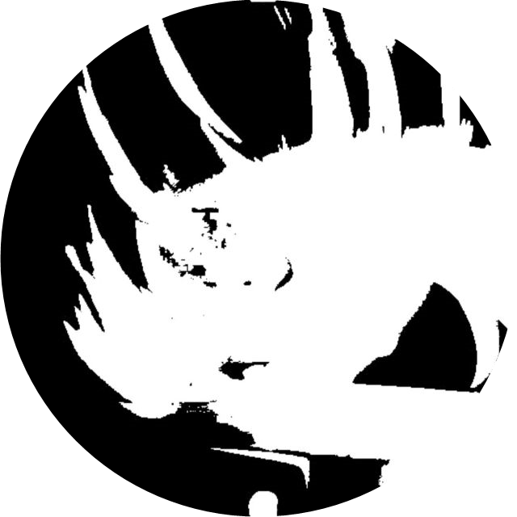

RLCYYG © 2026
小岛秀夫
KOJIMA
My favorite creator
奠定了我一半审美标准的人
擅长电影化叙事
合金装备、死亡搁浅的缔造者
哲学思考多如牛毛
重视镜头语言
热爱电影
执着于打破表达边界
飞跃地平线
BRING ME THE HORIZON
My favorite band
陪伴了我四年的英国摇滚乐队
编曲与人声结合叹为观止
大量融入电子与流行摇滚元素
擅长嘶吼与清嗓的来回切换
我最爱的一首
Drown
音乐人
愿我们的烦恼与忧虑化为乌有
Vos have ut ambulare farther in via
TASSI
水树
音乐人
擅长合成器与民俗音乐的融合
几乎所有元素都会出现在他的音乐里
人声多层堆叠营造仪式般宏大氛围
大量吸纳东南亚民俗采样与打击乐
富含神话心理学与社会哲思
Hai yai forces
HIRASAWA
平沢進
音乐
MUSIC
金属狗
· 旋律死亡金属
· 抑郁自杀黑金属
· 氛围黑金属
· 原始黑金属
· 激流金属
· 力量金属
· 新金属
喜欢的风格
· 后核
· 死核
· 金属核
· 后硬核
· 旋律硬核
· 另类摇滚
其他
· 前卫电子
· Techno‑Pop
· 民族音乐
· 实验音乐
· 氛围音乐
· 咏唱
游戏
GAME
其他
· 死亡搁浅
· 泰拉瑞亚
· 使命召唤 20
· 星露谷物语
· 反物质维度
· BLACK SOULS
自动化建设
· 戴森球计划
· 异星工厂
· 幸福工厂
· 异形工厂
· 像素工厂
· 格雷科技
潜行战术谍报
· 合金装备
· 耻辱
· 杀手
· 刺客信条
· 阿卡姆系列
· 狙击精英
· 细胞分裂
国产乐队
· 醒山
· 往生
· 郁乐队
· 霜冻前夜
· 死因池
· 黑冥煞
国外乐队
· BMTH
· KSE
· EToS
· Lorna Shore
· Dreariness
· ALAZKA
音乐人
· 水树
· 平沢進
· Andy Cizek
BAND
乐队
剧集
· 超人与露易丝
· 哥谭
· V世代
电影
· 超人：钢铁之躯
· 蝙蝠侠大战超人
· 正义联盟扎导版
· 新蝙蝠侠
· 诺兰蝙蝠侠
· 美国队长 2 & 3
动画/漫画
· 进击的巨人
· 魔法少女小圆
· 吊带袜天使
· Fate/UBW
· 炎拳
· 蓦然回首
FILM
影像
开源中文汉化语言包
FACTORIO
我是该仓库提交行数第二多的贡献者
补了大量词条和翻译
主要活跃于2024.12~2025.6
现已不再做汉化
CONTRIBUTION
贡献